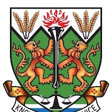
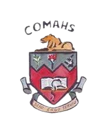
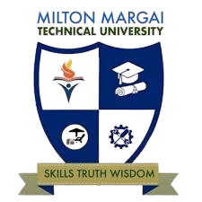
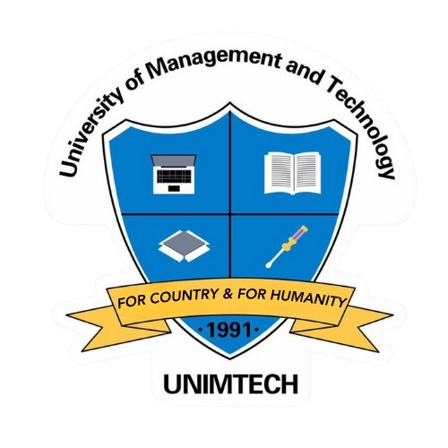

University in Sierra Leone

Fourah Bay College (FBC)
Fourah Bay College is a public university in the neighbourhood of Mount Aureol in Freetown, Sierra Leone. Founded on 18 February 1827, it is the first western-style university built in Sub-Saharan Africa and, furthermore, the first university-level institution in Africa.

Institute of Public Adminstration and Management (IPAM)
The Institute of Public Administration and Management is an institute of the University of Sierra Leone. It operates like other constituent colleges of the University of Sierra Leone, under the authority of the University Senate and the University Court.

Njala University
Njala University is a public university located in Njala and Bo, Sierra Leone. It is the second largest university in Sierra Leone. The largest and main campus of Njala University is in Njala, Moyamba District; the other campus is Bo, the second largest city in Sierra Leone.

College of Medicine and Allied Health Sciences (COMAHS)
COMAHS has a primary mandate to produce doctors, nurses, pharmacists, biomedical scientists and laboratory technicians with a view of improving the health care delivery system in Sierra Leone.

Milton Margai Technical University
Milton Margai College of Education and Technology, formerly known as Milton Margai Teachers College, is a technical university located in Freetown, Sierra Leone.

UNIVERSITY OF MANAGEMENT AND TECHNOLOGY (UNIMTECH)
UNIMTECH is a Sierra Leonean based Information Technology Training Institution devoted to the development and training of computer users and professionals. It was founded on the 16th July 1991 and it was named the Kissy Computer Training Institute (KCTI).